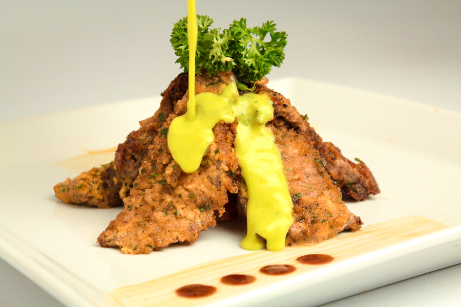
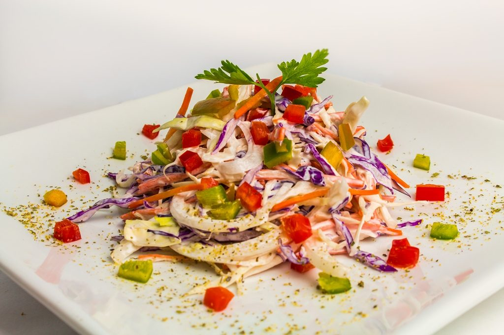
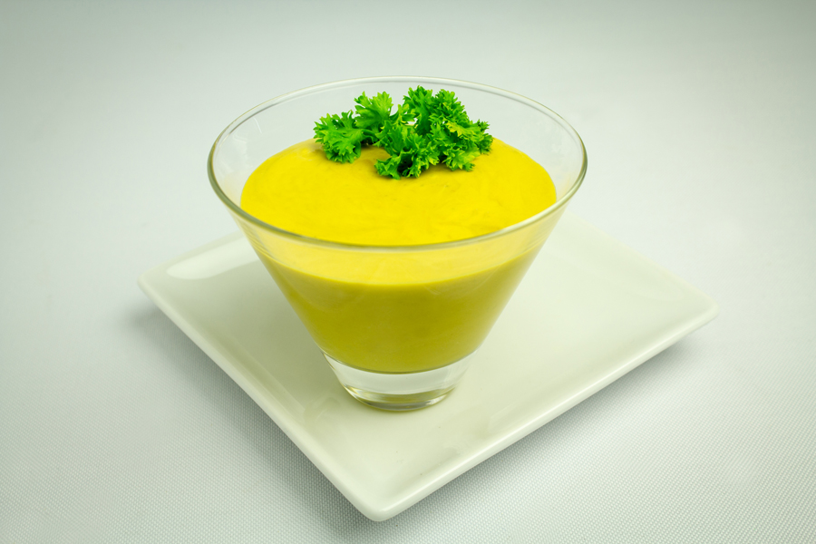
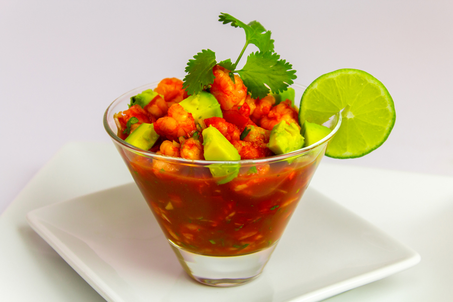

4 Pechugas de Pollo
1 Taza de Mayonesa B&B, 1 Cucharada de Mostaza B&B, 2 Cucharadas de Consome de Pollo B&B, 2 Tazas de Aceite Vegetal para Freir, 1 Pizca Pimienta Al Gusto
1 Taza de Miga de Pan, 1 Taza de Queso Parmesano, 3 Cucharadas de Perejil Finamente Picado
En un tabla colocar las pechugas y rodajar en forma de mariposa delgada, marinarlas con la Mayonesa B&B, la Mostaza B&B, el Consome de Pollo B&B y pimienta al gusto, dejar reposar por 5 minutos.
En otro recipiente preparar el empanizado mezclando la miga de pan, el queso parmesano, el perejil y pimienta al gusto, empanizar las pechugas a manera de cubrirlas en su totalidad.
Precalentar un sarten con el aceite, cuando esté caliente colocar las pechugas hasta que el empanizado dore por ambos lados y colocar en papel absorbente.
Ideal para acompañar con arroz y una ensalada.

Ingredientes
3 Cucharadas de Mayonesa B&B Cucharadas Soperas, 1/2 Cucharaditas de Mostaza B&B, 1 Cucharadita de Consome de Pollo B&B, 5 Hojas de Repollo Verde Cortado Finamente, 5 Hojas de Repollo Morado Cortado Finamente, 2 Ramitas de Apio Cortados en Cuadros, 1 Zanahoria Pequena Cortada en Juliana Fina, 1/2 Cebolla Cortada en Cuadros Pequeños, 1 Chile Pimiento Rojo Cortado en Cuadros Pequeños, 1 Ajo Picado en Cuadros Pequenos
1 Pizca Pimienta Al Gusto. En un recipiente para ensalada, colocar el repollo morado y verde, y agregar la Mayonesa B&B, la Mostaza B&B, el Consomé de Pollo B&B, el chile pimiento rojo , la zanahoria, el ajo picado y mezclar todos los ingredientes de manera uniforme, agregar la pimienta al gusto del consumidor.

Ingredientes
1/2 Taza de Mostaza B&B, 2 Cucharadas de Consome de Pollo B&B, 2 Tazas de Crema Pura, 2 Cucharadas de Mantequilla, 1 Diente de Ajo Finamente Picado, 1/2 Cebolla Cortada en Cuadros Pequenos, 1 Pizca Comino, 1 Pizca Oregano, 1 Pizca Pimienta Al Gusto. En un sarten previamente calentado agregar la mantequilla, el ajo y la cebolla hasta que dore y retirar. En un recipiente hondo mezclar la Mostaza B&B, la crema, el Consome de Pollo B&B, agregar el salteado de ajo con cebolla y mezclar bien hasta crear una aderezo uniforme, dejar reposar por 5 minutos y verter sobre las milanesas.
Ideal para acompanar carnes y mariscos.

Ingredientes
1/2 Taza de Salsa Ketchup B&B, 1/4 Taza de Salsa Inglesa B&B, 3 Cucharadas de Mostaza B&B, 2 Libras de Camaron Precocido Pelado, 4 Limones, 1 Manojo Cilantro Picado, 3 Tazas de Jugo de Tomate con Almejas, 1 Cebolla Grande Picada en Cuadros, 6 Tomates Picados en Cuadros, 3 Aguacates Picados en Cuadros, 1 Pizca Sal Al gusto
1 Pizca Pimienta Al gusto. En un recipiente hondo mezclar la Ketchup B&B, la Salsa Inglesa B&B, la Mostaza B&B y el jugo de tomate con almejas hasta que los ingredientes queden unificados. Agregar los camarones, el tomate, el jugo de los limones, el cilantro y la cebolla de manera que todos los ingredientes queden bien mezclados, adornar con aguacate encima del coctel.
